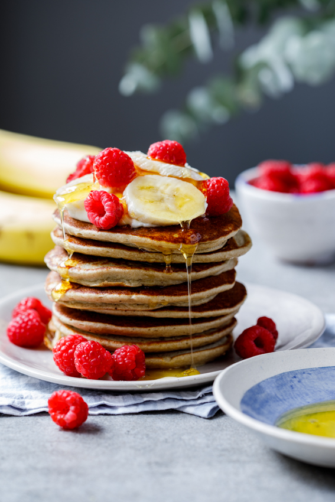

Healthy banana pancake

Description:
Healthy, easy to prepare banana oat pancakes and can be served with fruits, perfect for breakfast.
You can prepare it in just a few minutes!
Ingredients:
-
1/2 cup oats. Rolled oats or old-fashioned oats.
Instant oats and steel cut oats won't work.
- 2 bananas
- 2 eggs
- 1/2 teaspoon baking powder
- pinch of salt
- Maple syrup to serve (optional)
- Fresh fruit of your choice to serve
Steps:
- In a blender, combine the peeled banana, eggs, oats, baking powder and salt.
- Allow to blend until mixture is as smooth as you want it and blended well.
Allow the batter to stand for 10-20 minutes until thickened slightly.
- Heat a non-stick frying pan over medium heat.
- Fry spoonfuls of the batter until golden brown on both sides.
- Serve with a drizzle of maple syrup and fresh fruit of your choice.
Macros:
- 245 calories, 9g proteins, 41 carbs, 5g fiber, 5g fat
Return to Homepage